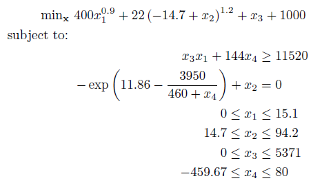

Example 2
Nonlinearly constrained nonlinear program:

The above problem is a typical global optimization problem consisting of both a nonlinear objective and nonlinear constraints. As with Example 1, write anonymous functions for the objective and constraints, noting for multiple constraints to write the function as a column-wise vector:
% Objective Function
fun = @(x) 400*x(1)^0.9 + 22*(-14.7 + x(2))^1.2 + x(3) + 1000;
% Nonlinear Constraints
nlcon = @(x) [ x(3)*x(1) + 144*x(4);
-exp(11.86 - 3950/(460 + x(4))) + x(2) ];
cl = [11520;0];
cu = [Inf;0];
% Bounds
lb = [0;14.7;0;-459.67];
ub = [15.1;94.2;5371;80];
% Starting Guess
x0 = [NaN;14.7;NaN;NaN];
In the above code block, we have also defined a starting guess for x2 as 14.7. For the other variables, NaN indicates to BARON to let it choose a starting point. The problem can be solved as follows:
[x,fval,exitflag,info] = baron(fun,[],[],[],lb,ub,nlcon,cl,cu,[],x0)
And the solution is:
x =
0.0000
94.1779
0.0001
80.0000
We can also inspect the information structure returned from BARON for more information on the solver run:
info =
Model_Status: 'Optimal Within Tolerances'
BARON_Status: 'Normal Completion'
Total_Time: 0.3300
BaR_Iterations: 13
Best_Node: 6
Max_Nodes_InMem: 3
Lower_Bound: 5.1949e+003
Upper_Bound: 5.1949e+003
Bad_Bounds: 0
This information indicates that the solver converged as expected, and has bounded the objective value within the default tolerance to ensure a globally optimal solution to this model.
The MATLAB/BARON interfarce is provided from http://www.minlp.com.